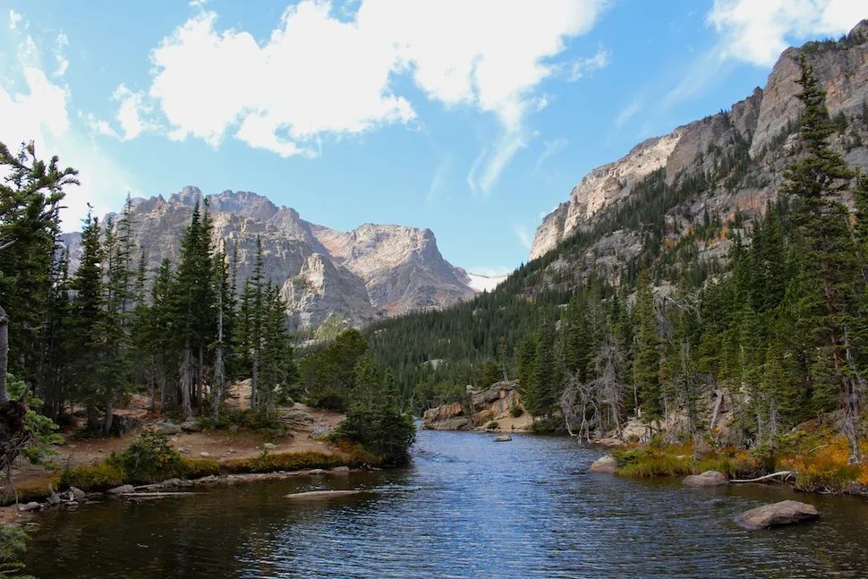

The Loch Vale Watershed is located in Rocky Mountain National Park, Colorado. Long-term ecological research and monitoring began in 1982 and addresses watershed-scale ecosystem processes, particularly as they respond to atmospheric deposition and climate variability. The project is a cooperative effort between the U.S. Geological Survey (USGS), National Park Service (NPS), and Colorado State University (CSU). Support for data collection is jointly provided by the USGS Western Mountain Initiative (WMI) and Water, Energy, and Biogeochemical Budgets (WEBB) programs. Monitoring of climate, hydrology, precipitation chemistry, and surface water quality allows analysis of long-term trends and distinction between natural and human-caused disturbances. Research efforts are diverse and include ecological response to nitrogen deposition, climate variability and change, microbial activity in sub-alpine and alpine soils, hydrologic flow paths, and the response of aquatic organisms to disturbance. These research activities provide knowledge about the broad range of processes that influence high-elevation ecosystems in the Rocky Mountains. This website provides information about the research program, including access to maps and data.
The Loch Vale watershed is located directly east of the continental divide in Rocky Mountain National Park, Colorado. The watershed is 660 hectares in size and ranges in elevation from 3,110 m (10,201 ft) at the Loch Outlet to 4,009 m (13,153 ft) at Taylor Peak. There are three lakes in the watershed: The Loch, Lake of Glass, and Sky Pond. The watershed is divided into two main sub-basins, with Andrews Creek draining the northern sub-basin and Icy Brook draining the southern sub-basin. The majority of Rocky Mountain National Park is underlain by igneous (granite) and metamorphic (schist and gneiss) formations. The watershed consists of 83% bare rock, boulder fields, and snow/ice; 11% tundra; 5% forest; and 1% subalpine meadow (Baron 1992). The sub-alpine forests of Loch Vale are dominated by Engelmann spruce (Picea englemannii) and sub-alpine fir (Abies lasiocarpa), with the average tree age around 500 years old. Average annual precipitation is 110 cm with 65-80% originating as snow. A more detailed description of the Loch Vale watershed can be found in Baron (1992).